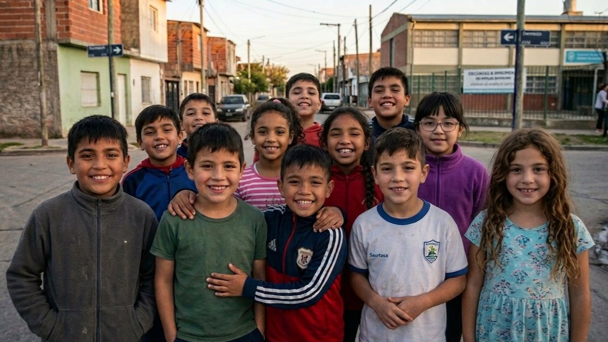
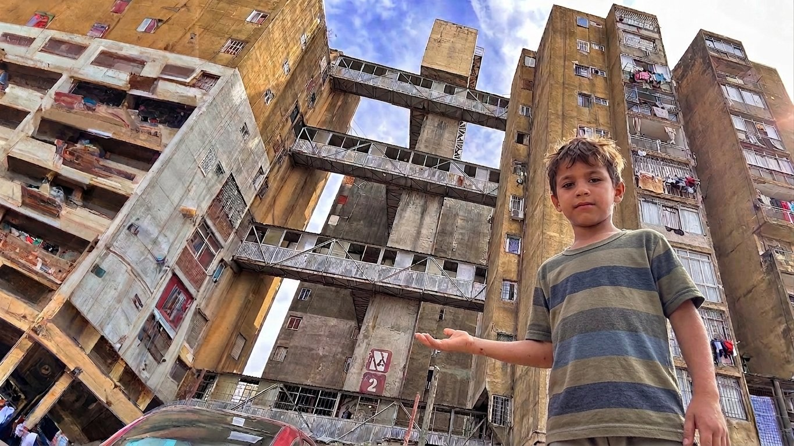
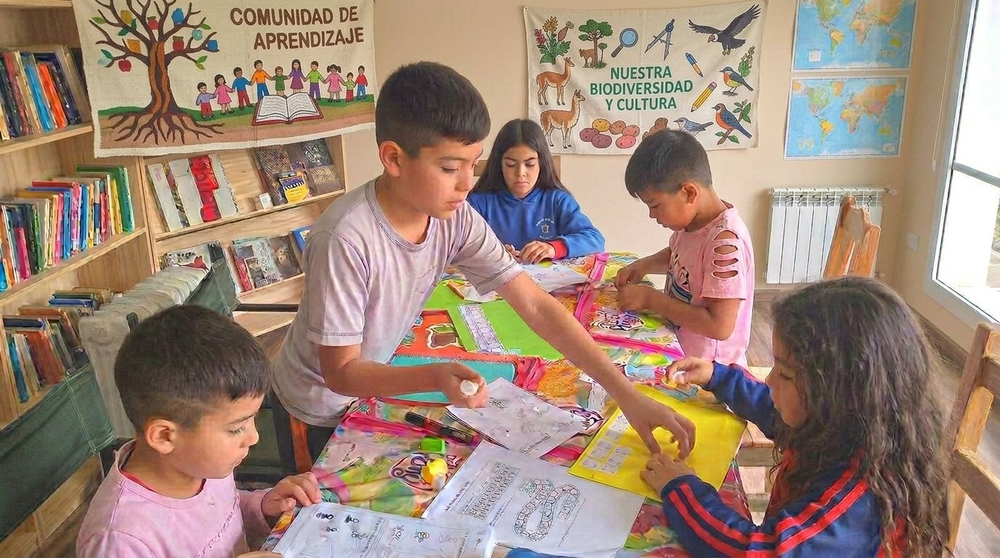

Comunicación Territorial
Entrevistas, streaming, documentales, recorridas barriales, mesas de debate y coberturas comunitarias.

Institución territorial nacida en el conurbano bonaerense. Impulsamos transformación social, educativa, cultural y audiovisual con alcance local, nacional e internacional.

"Nacida en el conurbano bonaerense, orientada a promover procesos de transformación social con alcance local, nacional e internacional."
Institución territorial, cultural, educativa, tecnológica, ambiental y audiovisual que trabaja para impulsar programas vinculados a la inclusión social, la educación, la cultura, la tecnología y el desarrollo comunitario.
Ver ejes de acciónHacé click en cada eje para ver actividades y detalles.


Intervención artística en el Club Patria de José Ingenieros. Diseño y ejecución de mural identitario que recupera el espacio público y refuerza la pertenencia territorial.



Promover la transformación cultural, educativa y comunitaria del barrio Ejército de los Andes mediante iniciativas audiovisuales, sociales, institucionales y territoriales.

Espacio cultural, educativo, audiovisual, tecnológico y comunitario destinado a actividades formativas, producción audiovisual y proyectos sociales.
Creemos en el poder transformador del compromiso voluntario. Si querés aportar tu tiempo, talento o energía al barrio, tenemos un lugar para vos.
Quiero ser voluntario…y mucho más. Contanos en qué podés aportar.
Cada aporte nos permite seguir desarrollando programas educativos, culturales y audiovisuales en el barrio Ejército de los Andes.
"Construir desde el territorio una institución moderna capaz de transformar barrios históricos de Argentina mediante cultura, educación, tecnología, medio ambiente, comunidad y organización colectiva, promoviendo modelos de integración y desarrollo social con proyección nacional e internacional."Apoyar la Fundación